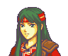

Support Rank C

さあ 次の敵は・・・

・・・・・・
？
ぼくに用？ スーさん
あなたも 弓を使うのね
え うん
そうだけど
どうして
馬にのらないの？
どうしてって・・・
ぼくたちは ずっと
こうして戦ってきたからさ
でも それでは
戦いにくくはない？
そんなことはないよ
ぼくは むしろ 馬から弓を使う方が
戦いにくい気がするけど
そう・・・
あ ちょっと スーさん！
変わった女の子だなぁ
Support Rank B
ウォルト
あれ スーさん
どうしたの？
やっぱり 馬の上のほうが
いい気がするわ
え？
・・・ひょっとして 弓のこと？
ええ
目標に近づいたり はなれたりするのが
馬のほうが 便利だし
まあ 人それぞれだとは
思うけど・・・
って ひょっとして ためしてみたの？
馬からおりて
実際に やってみないと
わからないから
あぶないよ！
実戦で なれないことをすると
命にかかわるんだから！
実戦ではないわ
行軍の途中 時間があるときに
木に向かって試してみただけよ
あ なんだ・・・
ありがとう
？
心配してくれたんでしょう？
うん まあ・・・
同じ軍にいる仲間だしさ
Support Rank A
ウォルト？
どうしたの 息が切れているわ
・・・やっぱり 馬の移動は
大きいね スーさん
追いつくのに ひと苦労だよ
ハァッ ハァッ ハァッ
いや 馬のほうが 戦うときに
便利だって言っていただろう？
目標に近づいたり はなれたり
するからって それで・・・
ためしてみたの？
「実際に やってみないと
わからない」だろう？
で どうだったの？
うん この点では
馬にはかなわないよ
でも 安定感とかあるし
やっぱり馬に乗らないでというのも・・・
「実戦でためすのは危険」
じゃなかった？
あ
・・・まあ ちょっと動いただけだし
このくらいなら
大きく移動したければ
わたしの後ろに のればいいわ
いいのかい？
でも わたしの後ろで
弓をつかうのはムリでしょうけど
弓を使うどころか！
ふりおとされないようにするのが
精一杯だよ
うん ぼくは 地に足をつけて
弓を使うほうが 性にあってそうだ
フフフ・・・
そうかもしれないわね